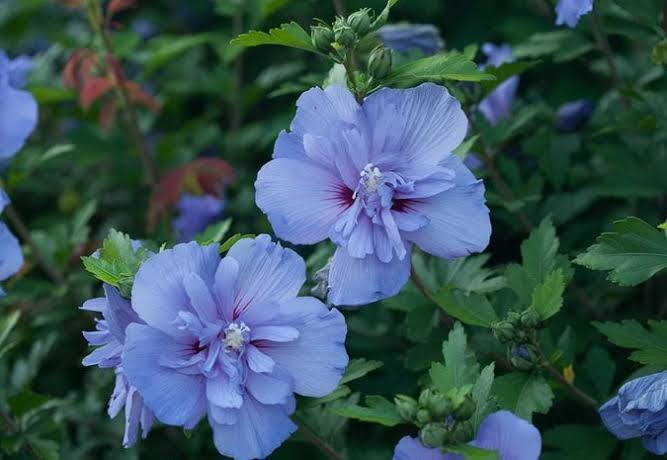
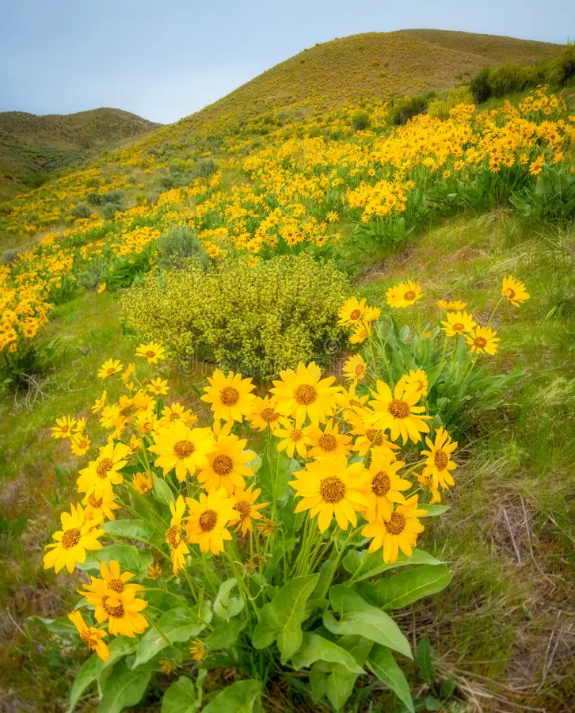
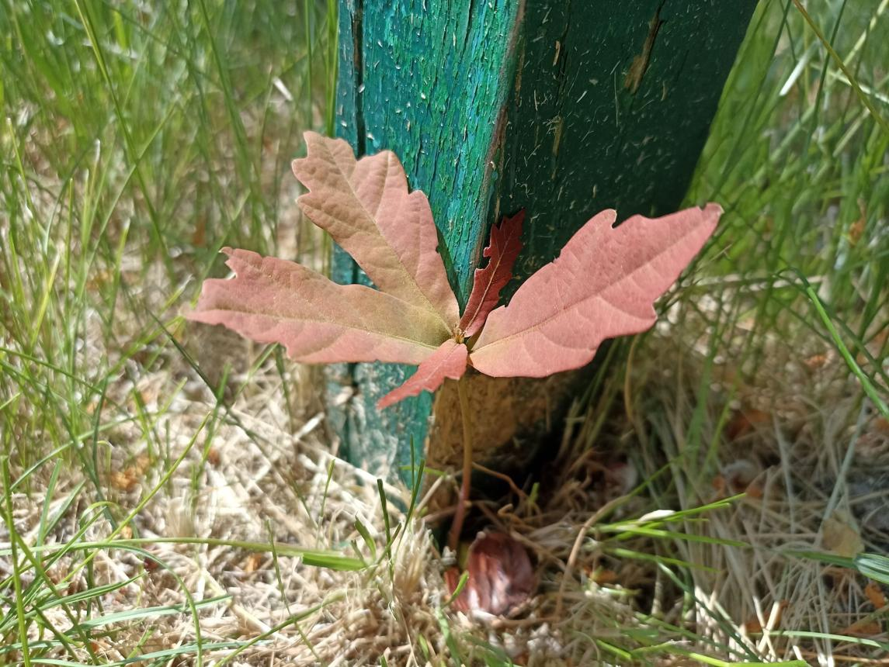
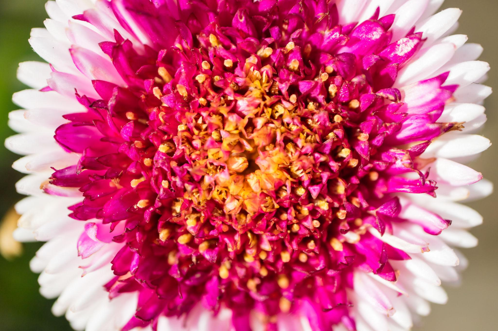
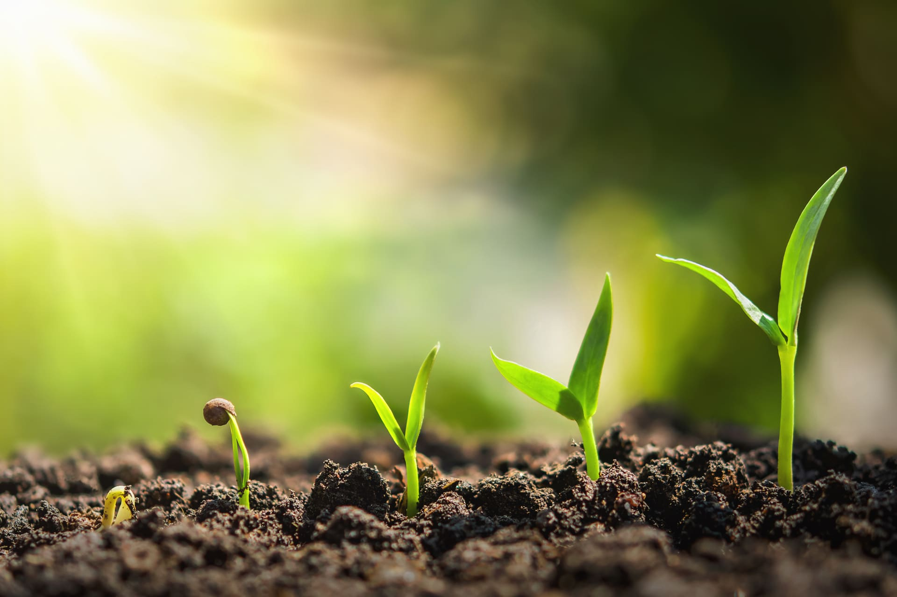
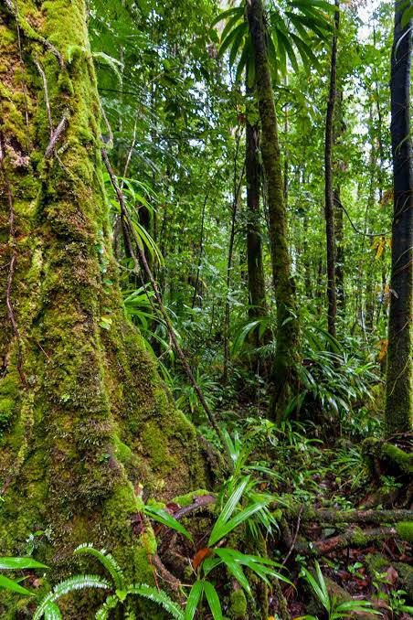
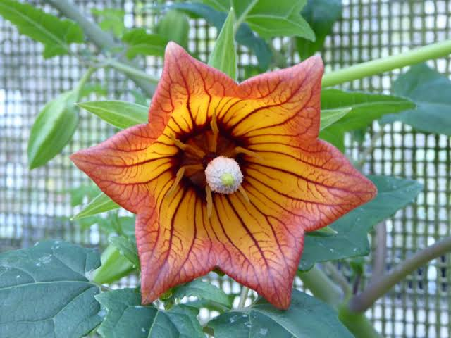
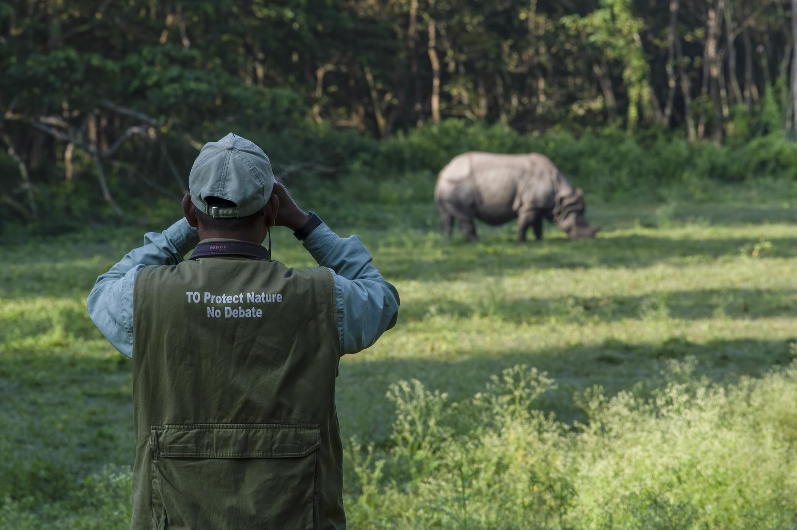
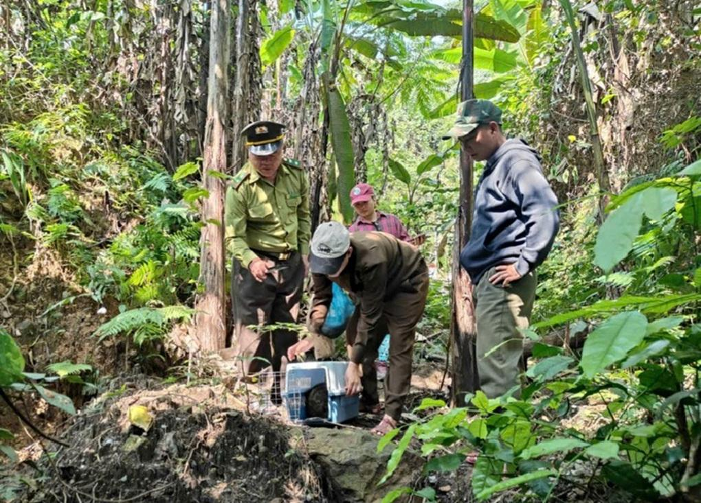

🌿 The Wonderful World of Plants
Plants are one of the most important parts of life on Earth. They can be found almost everywhere, from forests
and
grasslands to deserts, mountains, gardens, and even our homes. They come in many different shapes, sizes, and
colors, and each type of plant has its own unique characteristics.
Plants provide food, oxygen, shelter, and many other resources for humans and animals. They also help keep
ecosystems healthy and provide homes for countless insects, birds, and other creatures.




🌱 How Plants Grow
Plants need several important things to grow and survive. These include sunlight, water, air, nutrients, and
suitable soil.
Most plants use sunlight to make their own food through a process called photosynthesis. During photosynthesis,
plants use sunlight, water, and carbon dioxide to produce food and release oxygen into the air.
This makes plants extremely important because the oxygen they release is used by humans and many animals for
breathing.

🌳 Different Types of Plants
There are many different types of plants around the world.
Trees are large plants with strong stems or trunks. They can live for many years and provide shelter and food for
wildlife.
Flowers add color and beauty to the environment. Many flowering plants also provide nectar and pollen for bees,
butterflies, and other insects.
Grasses are common in grasslands and many other environments. They provide food for animals such as zebras, cattle,
and other herbivores.
Ferns and mosses are often found in cool, damp environments and can grow in places where many other plants cannot.
🌍 Why Plants Are Important
Plants play a major role in maintaining life on Earth. They provide food for people and animals, absorb carbon
dioxide, release oxygen, and help regulate the environment.
Plants are the foundation of almost every ecosystem. Through the process of photosynthesis, they use sunlight,
water, and carbon dioxide to produce food and release oxygen into the atmosphere. Every breath we take depends
on
this remarkable process.
Plants also provide food for humans and animals. Fruits, vegetables, grains, herbs, and nuts all come from
plants,
making them essential for life. Beyond food, plants are used to produce medicines, clothing, paper, building
materials, and fuel.
Forests play a particularly important role in regulating Earth's climate. Trees absorb carbon dioxide, helping
reduce greenhouse gases in the atmosphere while providing habitats for countless species of wildlife. Healthy
forests also prevent soil erosion, improve water quality, and reduce the impact of floods.
Plants also provide materials that humans use every day. Wood, cotton, fruits, vegetables, grains, herbs, and many
other products come from plants.
Forests are especially important because they provide habitats for huge numbers of animals and plants.
🐝 Plants and Animals
Plants and animals depend on each other in many ways. Animals may eat plants for food, while plants depend on some
animals and insects for pollination and seed dispersal.
For example, bees and butterflies visit flowers to collect nectar and pollen. As they move from one flower to
another, they can help plants reproduce.
Trees and other plants also provide animals with places to build nests, hide from predators, and raise their young.
🌍 Ecosystems and Biodiversity
An ecosystem is a community of living organisms interacting with each other and with their physical environment.
Forests, deserts, wetlands, rivers, oceans, and grasslands are all examples of ecosystems.
Biodiversity refers to the variety of life on Earth. The greater the biodiversity, the healthier and more
resilient
an ecosystem becomes. Diverse ecosystems are better able to withstand diseases, natural disasters, and changes
in
climate.
Every organism, whether large or small, contributes to the balance of nature. Even insects, fungi, and
microorganisms play vital roles by recycling nutrients and breaking down dead plants and animals.


🌸 The Relationship Between Plants and Animals
Plants and animals are deeply connected.
Plants provide oxygen, food, shelter, and habitats for animals. In return, many animals help plants reproduce by
pollinating flowers and dispersing seeds.
For example:
Bees transfer pollen from one flower to another, helping plants produce fruits and seeds.
Birds eat fruits and spread seeds through their droppings, allowing new plants to grow in different locations.
Elephants create pathways through forests that allow sunlight to reach smaller plants.
Earthworms enrich the soil, making it easier for plants to absorb nutrients.
Without these relationships, many ecosystems would struggle to survive.
🌊 Nature Across Different Habitats
Earth contains a wide variety of habitats, each supporting unique plants and animals.
Rainforests:
Rainforests are among the most diverse ecosystems on the planet.
They receive abundant rainfall and are home to towering trees, colorful birds, monkeys, insects, orchids,
and
countless other species.
Grasslands:
Grasslands are dominated by grasses rather than trees. Animals such as zebras, antelopes, elephants, and
lions
thrive in these open landscapes.
Oceans:
Covering more than 70% of Earth's surface, oceans support whales, dolphins, sharks, turtles, fish, coral
reefs,
and
microscopic plankton. Marine plants such as seagrasses and algae also contribute significantly to global
oxygen
production.
Deserts:
Although deserts receive very little rainfall, many specialized plants and animals have adapted to survive
there.
Cacti store water, while animals such as camels and desert foxes have evolved remarkable ways to conserve
moisture.
🌱 Why Conservation Matters
Human activities such as deforestation, pollution, illegal hunting, and climate change threaten many species
of
plants and animals.
When forests are cleared, countless animals lose their homes. Pollution contaminates rivers and oceans,
affecting
both wildlife and people.
Rising global temperatures alter habitats and make survival more difficult for many species.
Conservation efforts aim to protect ecosystems through national parks, wildlife reserves,
sustainable farming, reforestation, pollution reduction, and environmental education.
These actions help preserve biodiversity for future generations.
🌎 How Everyone Can Help


Every plant matters. Plant a tree, nurture a flower, and help make the
Earth greener for future generations.
📧 Contact Us | 🌍 Join Us in Protecting Nature
© 2026 Maria’s Nature Haven. All Rights Reserved. 💚